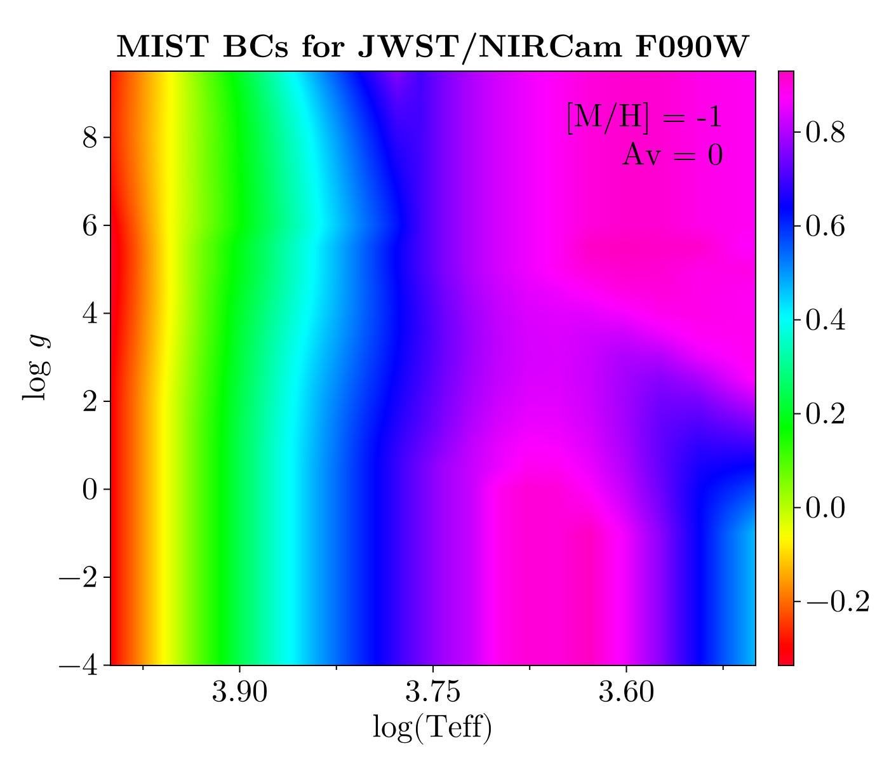

MIST
This submodule enables interaction with the bolometric correction (BC) grid released as part of the Mesa Isochrones & Stellar Tracks (MIST (Dotter, 2016; Choi et al., 2016)) project. The MIST BC grid is convenient because it includes a wide range of photometric filters and covers the full range of effective temperature, surface gravity, and metallicity relevant for most applications in stellar evolution. The grid is also regular in the dependent variables, greatly simplifying interpolation. The following figure shows a projection of a small portion of the BC table for one choice of metallicity and V-band extinction.
Chemistry
The MIST BC grid assumes scaled-solar metal abundance ratios assuming the protostellar birth cloud bulk metallicity of Asplund et al. (2009), so [M/H] is equivalent to [Fe/H]. The literature on the MIST models prefers to use [Fe/H], so we follow the same convention here. We provide BolometricCorrections.MIST.MISTChemistry to access information on the MIST chemical mixture following the chemical mixture API.
BolometricCorrections.MIST.MISTChemistry — TypeMISTChemistry()Returns a singleton struct representing the MIST chemical mixture model. MIST assumes the protostellar Asplund et al. (2009) solar abundances. Sum of protostellar hydrogen, helium, metal mass fractions from last row of Table 4 sums to 0.9999, not 1 as it should. To keep calculations consistent, the protostellar values are normalized to sum to 1 here.
julia> using BolometricCorrections.MIST: MISTChemistry, X, Y, Z, X_phot, Y_phot, Z_phot,
MH;
julia> chem = MISTChemistry();
julia> X(chem) + Y(chem) + Z(chem) ≈ 1 # solar protostellar values
true
julia> X_phot(chem) + Y_phot(chem) + Z_phot(chem) ≈ 1 # solar photospheric values
true
julia> MH(chem, Z(chem) * 0.1) ≈ -1.0189881255814277
true
julia> Z(chem, -1.0189881255814277) ≈ Z(chem) * 0.1
trueThe full range of dependent variables covered by this grid is given in the table below.
| min | max | |
|---|---|---|
| Teff | 2500 K | 1e6 K |
| logg | -4.0 | 9.5 |
| [Fe/H] | -4.0 dex | 0.75 dex |
| Av | 0.0 mag | 6.0 mag |
| Rv | 3.1 | 3.1 |
The full grid of unique values for the dependent variables is available in BolometricCorrections.MIST.gridinfo.
keys(BolometricCorrections.MIST.gridinfo)(:Teff, :logg, :feh, :Av, :Rv)Types
BolometricCorrections.MIST.MISTBCGrid — TypeMISTBCGrid(grid::AbstractString)Load and return the MIST bolometric corrections for the given photometric system grid. This type is used to create instances of MISTBCTable that have fixed dependent grid variables ([Fe/H], Av). This can be done either by calling an instance of MISTBCGrid with (feh, Av) arguments or by using the appropriate constructor for MISTBCTable.
julia> grid = MISTBCGrid("JWST")
MIST bolometric correction grid for photometric system MIST_JWST
julia> grid(-1.01, 0.11) # Can be called to construct table with interpolated [Fe/H], Av
MIST bolometric correction table with [Fe/H] -1.01 and V-band extinction 0.11The constructor for MISTBCGrid includes a parser to translate most human-readable photometric system names (e.g., "HST/ACS-WFC") into their proper internal identifiers. The full list of internal specifiers is given below.
import DataDeps
using BolometricCorrections.MIST
show(stdout, "text/plain", keys(DataDeps.registry))KeySet for a Dict{String, DataDeps.AbstractDataDep} with 24 entries. Keys:
"MIST_LSST"
"MIST_HST_ACS_HRC"
"MIST_HST_WFPC2"
"MIST_WISE"
"MIST_JWST"
"MIST_Washington"
"MIST_Swift"
"MIST_PanSTARRS"
"MIST_CFHT_MegaCam"
"MIST_SkyMapper"
"MIST_UVIT"
"MIST_UKIDSS"
"MIST_VISTA"
"MIST_UBVRIplus"
"MIST_HSC"
"MIST_HST_ACS_WFC"
"MIST_Spitzer"
"MIST_SDSS"
"MIST_GALEX"
"MIST_HST_WFC3"
"MIST_IPHAS"
"MIST_SPLUS"
"MIST_WFIRST"
"MIST_DECam"Each of these photometric systems utilizes a different data file. Each time you request a BC grid for photometric system you haven't yet downloaded, you will be prompted to allow download of the new data. Once a BC grid has been constructed for a particular choice of photometric system, a BC table (with variables [Fe/H] and Av fixed) can be interpolated.
BolometricCorrections.MIST.MISTBCTable — TypeMISTBCTable(grid::MISTBCGrid, feh::Real, Av::Real)Interpolates the MIST bolometric corrections in grid to a fixed value of [Fe/H] (feh) and V-band extinction (Av), leaving only Teff and logg as dependent variables (the MIST BCs have only one Rv value). Returns an instance that is callable with arguments (Teff [K], logg [cgs]) to interpolate the bolometric corrections as a function of temperature and surface gravity.
julia> grid = MISTBCGrid("JWST")
MIST bolometric correction grid for photometric system MIST_JWST
julia> table = MISTBCTable(grid, -1.01, 0.011)
MIST bolometric correction table with [Fe/H] -1.01 and V-band extinction 0.011
julia> length(table(2755, 0.01)) == 29 # Returns BC in each filter
true
julia> size(table([2755, 2756], [0.01, 0.02])) # `table(array, array)` is also supported
(29, 2)
julia> using TypedTables: Table # `table(Table, array, array)` will return result as a Table
julia> table(Table, [2755, 2756], [0.01, 0.02]) isa Table
truePhotometric Zeropoints
The MIST bolometric corrections assume a bolometric luminosity zeropoint of $3.0128 \times 10^{35} \, \text{erg} \, \text{s}^{-1}$ to define $M_\text{bol} = 0$. This is equivalent to adopting solar values for the bolometric magnitude of $M_\text{bol} = 4.74$ mag with bolometric luminosity of $3.828 \times 10^{33} \, \text{erg} \, \text{s}^{-1}$.
Information needed to convert between different photometric systems (AB, Vega, ST) is contained in BolometricCorrections.MIST.zpt, which is an instance of the BolometricCorrections.MIST.MISTZeropoints type. Additional information on operations supported by this type is available in our API documentation.
BolometricCorrections.MIST.zpt — ConstantThis constant is an instance of MISTZeropoints. See the docs for more informations on supported operations. This constant is returned when calling zeropoints on instances of MIST.MISTBCGrid and MIST.MISTBCTable.
Each set of bolometric corrections is specified on either the Vega or AB magnitude system. For ease of conversion amongst the AB, ST, and Vega systems this table is provided containing one line for each filter in our collection. The contents of the file can be used to convert amongst AB, ST, and Vega magnitude systems as follows.
| filter | system | mag(Vega/ST) | mag(Vega/AB) |
|---|---|---|---|
| WISE_W1 | Vega | 6.610497 | 2.665543 |
Above is the information for WISE W1, which is tabulated by default in Vega mags (as noted in column "system"). To convert WISE mags from Vega to AB is a simple operation: mag(AB) = mag(Vega) + "mag(Vega/AB)" [column 4 in the file]. For example, a star with WISE_W1(Vega) = 0.0 would have WISE_W1(AB) = 2.66.
To ease compatibility between Symbol and String representations, the mag(Vega/ST) and mag(Vega/AB) columns have been simplified to VegaST and VegaAB.
BolometricCorrections.MIST.MISTZeropoints — TypeStruct to contain the MIST zeropoint information. A constant instance is available as BolometricCorrections.MIST.zpt. Instances are callable with a filtername::AbstractString which will return the zeropoint entry for the relevant filter. The full table can be retrieved with Table(zpt) and the list of available filters can be retrieved with filternames(zpt).
MIST References
This page cites the following references:
- Asplund, M.; Grevesse, N.; Sauval, A. J. and Scott, P. (2009). The Chemical Composition of the Sun. Annual Review of Astronomy and Astrophysics 47, 481–522.
- Choi, J.; Dotter, A.; Conroy, C.; Cantiello, M.; Paxton, B. and Johnson, B. D. (2016). MESA ISOCHRONES AND STELLAR TRACKS (MIST). I. SOLAR-SCALED MODELS. ApJ 823, 102.